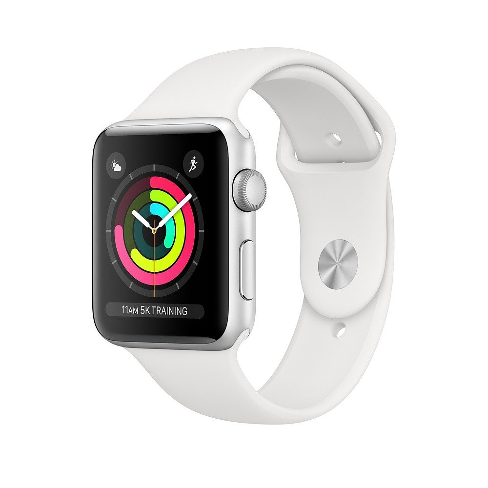

Apple Watch Series 3

Apple Watch Series 3 to czwarta generacja inteligentnych zegarków firmy Apple, wydana we wrześniu 2017 roku. Zegarek działa na systemie operacyjnym watchOS 4.0 i oferuje wiele funkcji, takich jak monitorowanie aktywności fizycznej, powiadomienia z telefonu, odtwarzanie muzyki i możliwość wykonywania połączeń telefonicznych, a także wysyłania wiadomości tekstowych. Apple Watch Series 3 posiada wodoszczelność do głębokości 50 metrów, wbudowany GPS i bardziej wydajny procesor niż poprzednie modele, a także moduł LTE, który umożliwia użytkownikom wykonywanie połączeń telefonicznych i korzystanie z Internetu bez użycia iPhone'a.
Powrót